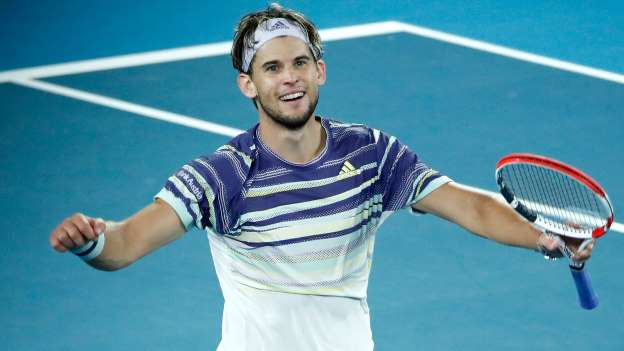

Its 2020! Let's rewind back to last year, 2019. I am going to be talking about the top 17 best tennis players of 2019.
17. NICK KYRGIOS
Nick Kyrgios is one of the most talented and skilfull tennis players in the world. He might have meltdowns quite a few times, but that does not stop him from being who he is now! Sure, his performances in 2019 in Grandslams were not great, hardly winning any matches, but in the other atp tournaments he is rocking it! He hit the 2nd best shot of 2019 in Miami hitting a mind-blowing tweener against Borna Coric! his performance in Washington open was just magnificent winning the title. In Acapulco, he beat Nadal, Wawrinka, Isner, and Alexander Zverev to win the title! It was probably one of his biggest titles of his tennis career so far! I think we are seeing a future Grandslam winner.
16. ROBERTO BAUTISTA AGUT
My number 16 pick is Roberto Bautista Agut. His performance in Qatar open was unbelievable, defeating the world number one at that time, Novak Djokovic in 3 sets. He came back from being a set and a break in the second set down, but he was able to pull it off, and win the match. later on he won the title. You might be thinking that it was just luck, but then he came in Miami. Novak Djokovic is the king of masters 1000's. Indian wells was a disaster for Djokovic, losing in the second round against Kolshrieber in straight sets, but then he was easily beating his opponents in Miami until he faced Roberto Bautista agut. he won the first set 6-1, but Bautista Agut won the match, winning the next two sets. He also made it to the semifinals of Wimbledon, losing to the defending champion in 4 sets, winning the second set 6-4. I think that he is a really great tennis player and that we will see more of him later on.
15. FABIO FOGNINI
Fabio Fognini was an extremely great tennis player this year. Clay season was his best performance yet. his brilliance in Monte Carlo paid off, to have won the title. he beat Zverev, Coric, Nadal, and Lajovic. The king of clay, Nadal, lost in the semifinals to Fabio Fognini. he was the favorite to win in straight sets, but Fognini showed Nadal who would win the title, and Fognini beat Nadal in straight sets. He came to the fourth round of Madrid open, losing to Dominic Thiem in straight sets. in french open, he came to the quarterfinals losing to alexander zverev in four sets, getting the first set 6-3. there is definetly going to be a bright future for this guy later on. who knows? he might win a Grandslam one day!
14. FELIX AUGER ALIASSIME
Felix Auger Aliassime is a very young talent and a definite future star. He had an amazing time in stuttgart making it to the final losing to Matteo Berettini. He beat a very good grass court player, dustin brown, in the semifinals. Dustin brown has a 2-0 Head to head record against Rafael Nadal, beating him on the grass both times, one of them being at Wimbledon, in four sets. Felix auger Aliassime was able to beat dustin brown in 3 sets. Dustin brown was serving for the match in the third set 5-4, but Felix hit an incredible shot to get the break back. Dustin brown also beat Alexander Zverev, the number 1 seed in three sets in the previous round. In the same year, Felix beat Stefanos Tsitsipas in straight sets 2 times. One was in Indian Wells, and the other was in queens open. He got his first grand slam win in Wimbledon and made it to the third round. In Washington open, He pulled off an incredible backhand passing shot against Marin cilic that was unforgettable. This guy is a great player and will get his first atp title very soon.
13. DENIS SHAPOVALOV
Denis Shapovalov had a pretty good season in 2019 winning his first title in Stockholm. He also came to the finals of the Pais masters open and the semifinals of the Miami open. In Miami open, he was beating all of his opponents and surprising them with his young talent, and got to the semifinals. He shocked Federer with a forehand volley in the second set of the semifinals. Then after having a troubling clay court season, he was able to make his return beating P.H. Herbert after a 5 match losing streak, beating him in straight sets. He lost to Dominic Thiem the round after, but was able to get a set of him. Then he went on to us open and got to the round of 16. He was able to beat Felix auger Aliassime in the first round in straight sets. He lost to Gael Monfils in the 4th round. He then went on to win his first title in Stockholm beating all of his opponents easily. Then he went on to Paris masters, coming to the finals. He beat both Gael Monfils and Alexander Zverev to come to the final. He lost to Djokovic in straight sets in the final. unfortunately he was unable to play in the next gen ATP Finals due to a serious injury, but I think we are going to see more of this young talent soon.
12. KAREN KACHANOV
Karen kachonov had a great year in 2019, coming to the quarterfinals of French open, as well as beating some top players in some tournaments. In the French open, he beat Juan Martin Del Potro in the round of 16, to make it into the quarterfinals. He lost to Dominic Thiem in straight sets in the quarterfinals. He had a hard time in grass season, but he went on to Montreal and beat Alexander Zverev in straight sets, hitting a lot of powerful shots. He lost to Daniel Medvedev in the semifinals in straight sets. He also beat Nick Kyrgios in 3 sets in Cincinnati open. Us open was not great for him, but he made it into the semifinals of Beijing open, losing to Dominic Thiem in 3 sets, managing to get the first set off him, 6-2. He has not had a lot of experience in tennis like Djokovic and Nadal and Federer, but he is still able to play great tennis, and he is definetly going to be a grand slam winner one day.
11. Matteo Berrettini
Matteo berettini had an amazing year in 2019, qualifying for the Nitto Atp Finals making it to the top 8 best tennis players in the world and had one successful win over Dominic Thiem. It was a great year to end his season off. He also came to the semifinals of the us open losing to Rafael Nadal in straight sets. He also won a title in stuttgart where Zverev, Kyrgios, and Felix auger aliassime played in. He came to the semifinals of Shanghai and Vienna losing to Zverev and Dominic Thiem. He beat Alexander Zverev in Rome. 2019 has been a great year for him I think he just might be a future world number one.
10. DIEGO SHWARTCZMAN
Diego shwartzman had a pretty great year in 2019 coming the the finals of Argentina open and Vienna open, and winning los Cabos. Another accomplishment was coming to the quarterfinals of the us open, losing to Nadal in straight sets, making a comeback in two of the sets. The first set, Nadal was serving 5-1, best Diego made him push harder for him to win it 7-5. He did the same thing in the second set, but with different scores. In Argentina open, he beat the prince of clay on the dirt in three sets, Dominic Thiem to make it into the final. He won los Cabos open and beat Taylor fritz to win the title. He came to the final of Vienna open, demolishing his other opponents in straight sets. He beat Gael Monfils, the third seed, and Karen Khachanov, the second seed! It would have been incredible if he beat the first, second, and third seed in one whole tournament, but he lost to Dominic them in three sets in the final. There is definitely going to be a great year coming ahead of him.
9. Grigor Dimitrov
Grigor Dimitrov had a massive improvement from his standards in 2018. He was so close to making it into the Atp finals, which he won in 2017. He had made it into the semifinals of the us open beating Alex de miner in the round of 16 and Roger Federer in the semifinals. He had lost to Daniel Medvedev in the semifinals in straight sets. In Paris he made it into the semifinals too, beating Dominic them in straight sets in the round of 16. He lost to Djokovic in the semifinals, but he made him push hard to get both the sets because he was playing brilliantly. He is going to be a future star one day and he will come back to London to win it sometime again.
8. Alexander zverev
Alexander zverev had a pretty good year in 2019. He came to the finals of Shanghai, quarterfinals of French open, and round of 16 of us open. He also came to the semifinals of London. In Shanghai open, he beat Roger Federer and Matteo berretini. He came and lost to Daniel Medvedev in the final in straight sets. In French open, he beat Fabio Fognini, making a comeback against him from being a set down, to winning in 4 sets. In the next round, he lost to Novak Djokovic in straight sets, who then lost to Dominic them in 5 sets, who then lost to Rafael Nadal in 4 sets. In us open, it was not so great, losing to Diego Shcwartzman in 5 sets. In London, he beat Rafael Nadal and danil Medvedev in round robin in straight sets, but then lost to Dominic Thiem in straight sets. He came form being number 3 in the world to being number 7 in the world according to Atp rankings. That is why he is number 8 in my list. He did come to the semifinals of Australian open this year, losing to Dominic Thiem in 4 sets. He will be a future grand slam winner.
7. Gael monfils
Gael Monfils had an amazing year in 2019. He won Rotterdam beating Stan Wawrinka in the final in three sets and beating Daniel Medvedev in another round. He also came to the quarterfinals of us open and the round of 16 in French open. He beat Denis Shapovalov in 4 sets in us open, and he beat all of his opponents in straight sets except for Dominic them in the French open. In all the other tournaments, he was still playing pretty good! He hit the shot of the year in Mututua Madrid open against Fuscovis, hitting a rapid jumping forehand backwards shot, and an incredible behind the back forehand shot in Halle open against Herbert. I think that he should have been qualified for London, because he did amazing to try to be in the top 8 best tennis players. He will be a Grandslam winner one day soon.
6. Stefanos Tsitsipas
Stefanos Tsitsipas had a wonderful year in 2019, winning Estoril, coming to the final of Madrid open, and winning London on his debut. In Estoril, he beat a very good clay court player, Pablo Cuevas to win the title. In Madrid open, he beat the defending champion Alexander Zverev and the king of clay, Rafael Nadal. He lost to Novak Djokovic in the final. In the Nitto app finals tournament, he beat Roger Federer, Alexander Zverev, Danil Medvedev, and Dominic Thiem to win the title. He performed really well to win the title. He has one pretty good in 2020 winning a title already beating Felix auger Alliassime to win Marseille. He is going to be a Grandslam star one day.
5. Danil medvedev
Danil Medvedev had an outstanding year in 2019, winning two masters 1000s, coming to thee final of Montreal, winning Sofia open, winning Petersburg and coming to the final of a grand slam. In Cincinatti, he beat Rublev and Novak Djokovic. He beat Goffin in the final. He also came to the semifinals of Monte Carlo beating Djokovic in that tournament as well. In Montreal, he beat Dominic Thiem and Karen Khachanov. In the us open, he beta Stan Wawrinka, Grigor Dimitrov, and lost to Nadal in an epic five sets in the final. Nadal had a 2 sets to love lead but he pushed him to go to five sets. He won St. Petersburg after that. Then he went on to Shanghai to beat Stefanos Tsitsipas, Fabio Fognini, and Alexander Zverev in the final. He is going to be a future star.
4. Roger Federer
Roger Federer had a pretty good season this year, winning Miami, coming to the final of Wimbledon, semifinals of French open, winning Basel, and winning Halle. In Miami, he beat Danil Medvedev, Denis Shapovalov, and John Isner to win the title. In Halle he beat Tsonga and Goffin to win the total. In French open, on his return to the clay court, he beat Stan Wawrinka in the quarterfinals and lost to Rafael Nadal in straight sets in the semifinals. In Wimbledon, he beat keisters Nishikori, Rafael Nadal, and lost to Djokovic in the final of Wimbledon,(He could have won EASILY, but of course, the 2011 us open choke happened.) In Basel he beat all of his players easily including Stefanos Tsitsipas and de miner. He also won Dubai open beating Stefanos Tsitsipas in the final in straight sets. I think someone will overtake him in mist grand slams later, or will he win his next grand slam in the grass in 2021? Let's find out!
3. Dominic Thiem
Dominic Thiem had a marvelous year in 2019, winning 5 Atp titles, coming to the finals of French open and London, and moving 3 spaces up in world rankings. He won his first ever masters 1000s title beating both Milos Raonic and Roger Federer he then moved on to win Barcelona, beating the king of clay, Rafael Nadal in straight sets. In the final, he beat Daniel Medvedev in straight sets. In Madrid open, he came to the semifinals beating both Fabio Fognini and Roger Federer. He lost to Novak Djokovic in the semifinals, but he came back to beat him in French open. He hit an absolutely ridiculous tweener against Gael Monfils in the French open round of 16. he beat Karen Khachanov in the quarterfinals and Novak Djokovic in the semifinals in an epic he lost to Rafael Nadal in 4 sets in the final. He moved on to his Austrian clay court tournament and won that demolishing all of his opponents. Then he moved on to Beijing. He beat Andy Murray, Karen Khachanov, and Stefanos Tsitsipas in the final to win the open. He came to the Quaterfinals of Shanghai beating Carreno Busta, and Basilashvilli. He lost to Matteo berretini in the quarterfinals. He moved on to the title he wanted to win the most, Vienna open. He beat Tsonga, Verdasco, Carreno Busta, berretini, and Shwarchtzman to win the title. The title that he wanted to win the most, he finally won it. Then he went on to the nitto atp finals. He beat both Roger Federer and Novak Djokovic in round robin to make it into the semifinals for the first time in his career. He beat Alexander Zverev in the semifinals to reach it into the finals. He lost to Stefanos Tsitsipas in the final in three sets. He is definitely going to win a grand slam in 2021.

2. Rafael Nadal
Rafael Nadal had an amazing year in 2019 beating Djokovic for the race to world number one. He came to the finals of Australian Open beating Alex de Minaur and Stefanos Tsitsipas. He lost to Novak Djokovic in straight sets. In Acapulco, he didn't have a good time losing in the round of 16 to Nick Kyrgios, getting comebacked on. In Barcelona, he lost to Dominic Thiem in straight sets in the semifinals. In Madrid open he beat Stan Wawrinka, and lost to Stefanos Tsisipas in the semifinals in three sets. Then he moved to rome, beating Tsitsipas and demolishing Djokovic in the final. Then he went on to French open, beating kei Nisikori, David Goffin, Roger Federer, and Dominic Thiem in the final in 4 sets. He made it into the semifinals of Wimbledon, losing to Roger Federer in 4 sets in the semifinal. He won Montreal beating Danil Medvedev. He also won us open beating Chung, Shwartczman, berretini, and Medvedev. Then he went on to Paris masters beating Tsonga and Wawrinka, and had to withdraw from his next mactch in the semifinals. He beat Danil Medvedev in ATP Finals making a comeback, and beat Stefanos Tstsipas, but somehow lost to Alexander Zverev. He then ended that year as the world number 1. Maybe he will not retire for quite some time and continue tennis.
1. Novak Djokovic
Novak Djokovic just had a wonderful year in 2019, winning two grand slams, two masters 1000's, and Tokyo open. He won Australian open, beating Daniel Medvedev, Denis Shapovalov, Lucas Pouiile, and Rafael Nadal in the final in straight sets. He didn't have a good time in Indian wells or Miami, but then he came to Madrid, winning that title beating Dominic Thiem and Stefanos Tsitsipas in the final in straight sets. He came to the final of Rome, but lost to Nadal in three sets. He moved on to French open, beating Alexander zverev in the quarterfinals, but then he lost to Dominic Thiem in the semifinals. In Wimbledon, he beat Kolschreiber, Bautista Agut, and roger Federer in the final, making a comeback form being two championship points down. He came to the semifinals of Cincinatti, losing to Danil Medvedev. He did not have much of a good time in the us open, losing to Stan Wawrinka in the round of 16, but he won Tokyo afterwards, beating David Goffin and John milkman. He went to Shanghai beating Denis Shapovalov, John Isner, but lost to Stefanos Tsitsipas in the quarter finals. He won Paris after, beating Stefanos Tsitsipas, Grigor Dimitrov, and Denis Shapovalov in the final in straight sets. He did not have a nice time in London, losing to Dominic Thiem and roger Federer in round robin, and not making it into the semifinals. He did beat Matteo berretini in a match, though. Maybe he won't retire! Who knows how many grand slams thus guy will win!
And that concludes my top 17 best tennis players of 2019 based on performance stats. Maybe it will change next year! Who knows which bright new young star will show their talent!